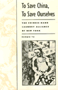

|
|
The
60s Experience
Hard Lessons About Modern America
Morgan, Edward P., and Howard P. Zinn
A compelling democratic vision that grounded Sixties movements
and traces its evolution through concrete experiences
New in Paperback!
357 pp • 6x9 • Spring 1991
paper 1-56639-014-1
EAN 978-1-56639-014-9
|
|
|
Aesthetic
Legacies
Krukowski, Lucian
The aesthetic theories of Kant, Schopenhauer, and Hegel are traced
through modernism and postmodernism
264 pp • 5.5x8.25 • Fall 1992
cloth 0-87722-972-4
EAN 978-0-87722-972-8
|
|
|
Aesthetics
of Environment
Berleant, Arnold
An engaging discussion of environment as aesthetic experience
256 pp • 6x9 • Fall 1992
cloth 0-87722-993-7
EAN 978-0-87722-993-3
|
|
|
AIDS,
The Winter War
Kahn, Arthur D.
A powerful study of efforts to bring new drugs for AIDS to U.S.
markets
224 pp • 6x9 • Fall 1992
cloth 1-56639-018-4
EAN 978-1-56639-018-7
|
|
|
Ain't
Gonna Let Nobody Turn Me Round
The Pursuit of Racial Justice in the Rural South
Couto, Richard A.
An examination of individuals who enacted change in the status,
opportunities, and treatment of African Americans in the rural South
New in Paperback!
440 pp • 6x9 • Spring 1991
paper 1-56639-004-4
EAN 978-1-56639-004-0
|
|
|
All
Talk
The Talkshow in Media Culture
Munson, Wayne
The postmodern phenomenon of the talkshow and its place in American
culture
288 pp • 6x9 • Fall 1992
cloth 0-87722-995-3
EAN 978-0-87722-995-7
|
|
|
Artifacts,
Art Works, and Agency
Dipert, Randall R.
A philosophical theory about the nature of human creations, especially
art works
288 pp • 6x9 • Fall 1992
cloth 0-87722-990-2
EAN 978-0-87722-990-2
|
|
|
Asian
American Panethnicity
Espiritu, Yen Le
A case study of how cultural diversity among Asian Americans is
subsumed for social and political advantage
238 pp • 6x9 • Fall 1992
cloth 0-87722-955-4
EAN 978-0-87722-955-1
|
|
|
Boundaries
of Art
Novitz, David
A lively exploration of the complex relations between art and life
296 pp • 5.5x8.25 • Fall 1992
cloth 0-87722-928-7
EAN 978-0-87722-928-5
|
|
|
Cattle,
Capitalism, and Class
Ilparakuyo Maasai Transformations
Rigby, Peter
An anthropologist explores the failure of rural development policies
in pastoral societies
272 pp • 6x9 • Fall 1992
cloth 0-87722-954-6
EAN 978-0-87722-954-4
|
|
|
The
Challenge of Restructuring
North American Labor Movements Respond
Jenson, Jane, and Rianne Mahon, eds.
An in-depth comparison of U.S. and Canadian economic restructuring
488 pp • 6x9 • Fall 1992
cloth 0-87722-981-3
EAN 978-0-87722-981-0
|
|
|
Cocaine
Changes
The Experience of Using and Quitting
Waldorf, Dan, Craig Reinarman, and Sheigla Murphy
Over 200 in-depth interviews with heavy users document the dangers
of cocaine, but the authors contend that the national hysteria over
it is largely unfounded
New in Paperback!
336 pp • 5.5x8.25 • Fall 1991
paper 1-56639-013-3
EAN 978-1-56639-013-2
|
|
|
Consider
and Hear Me
Voices from Palestine and Israel
Slapikoff, Saul A.
Interviews with Palestinian and Israeli peace activists reveal
the tragedy of the Occupation and the meaning of "intifada"
240 pp • 5.5x8.25 • Fall 1992
paper 0-87722-983-X
EAN 978-0-87722-983-4
cloth 0-87722-982-1
EAN 978-0-87722-982-7
|
|
|
Credit
Where It's Due
Development Banking for Communities
Parzen, Julia Ann, and Michael Hall Kieschnick
Lessons learned from successful development banks in U.S. communities
288 pp • 5.5x8.25 • Fall 1992
cloth 0-87722-811-6
EAN 978-0-87722-811-0
|
| 
|
Death
in the Dining Room and Other Tales of Victorian Culture
Ames, Kenneth L.
A richly illustrated and provocative discussion of Victorian culture
through an exploration of common household goods
280 pp • 8.5x11 • Spring 1992
cloth 0-87722-891-4
EAN 978-0-87722-891-2
|
|
|
Democracy
and Development in Latin America
Economics, Politics and Religion in the Post-War Period
Lehmann, David
The integration of three considerable topics for modern Latin American
history
New in Paperback!
272 pp • 6x9 • Spring 1990
paper 1-56639-011-7
EAN 978-1-56639-011-8
|
|
|
Deviance
and Medicalization
From Badness to Sickness
Conrad, Peter, and Joseph W. Schneider
A classic text on deviance is updated and reissued
Expanded Edition, with a
new Afterword by the Authors
352 pp • 7x10 • Fall 1992
paper 0-87722-999-6
EAN 978-0-87722-999-5
cloth 0-87722-998-8
EAN 978-0-87722-998-8
|
|
|
The
Early Colombian Labor Movement
Artisans and Politics in Bogota, 1832-1919
Sowell, David
A unique history of political activity by nineteenth-century Colombian
artisans
272 pp • 6x9 • Fall 1992
cloth 0-87722-965-1
EAN 978-0-87722-965-0
|
| 
|
Earth
Muse
Feminism, Nature, and Art
Bigwood, Carol
A philosopher denounces the suppression of the feminine in Western
culture
320 pp • 6x9 • Fall 1992
paper 0-87722-987-2
EAN 978-0-87722-987-2
cloth 0-87722-986-4
EAN 978-0-87722-986-5
|
|
|
Ecofeminism
Gaard, Greta, ed.
Feminist scholars and activists explore the relationships among
humans, animals, and the natural environment
304 pp • 6x9 • Fall 1992
paper 0-87722-989-9
EAN 978-0-87722-989-6
cloth 0-87722-988-0
EAN 978-0-87722-988-9
|
|
|
Fighting
Back in Appalachia
Traditions of Resistance and Change
Fisher, Stephen L., ed.
Citizen resistance and struggle in Appalachia since 1960
400 pp • 6x9 • Fall 1992
paper 0-87722-977-5
EAN 978-0-87722-977-3
cloth 0-87722-976-7
EAN 978-0-87722-976-6
|
|
|
For
an Audience
Thom, Paul
A philosopher offers a way to evaluate performance art
256 pp • 6x9 • Fall 1992
cloth 0-87722-991-0
EAN 978-0-87722-991-9
|
| 
|
The
Fragile Bridge
Paterson Silk Strike, 1913
Golin, Steve
A full-length study of the creative collaboration between workers
and activists in the 1913 Paterson silk strike
New in Paperback!
328 pp • 6x9 • Spring 1988
paper 1-56639-005-2
EAN 978-1-56639-005-7
|
| 
|
From
Redlining to Reinvestment
Squires, Gregory D., ed.
Community activists examine how formerly redlined communities have
generated billions of dollars in reinvestment
288 pp • 6x9 • Fall 1992
cloth 0-87722-984-8
EAN 978-0-87722-984-1
|
|
|
Gender
Thinking
Smith, Steven G.
The first comprehensive philosophical exploration of the concept
of gender
384 pp • 6x9 • Fall 1992
paper 0-87722-964-3
EAN 978-0-87722-964-3
cloth 0-87722-963-5
EAN 978-0-87722-963-6
|
|
|
Hope
and Dignity
Older Black Women of the South
Wilson, Emily Herring, Susan Mullally, and Maya Angelou
Twenty heart-felt narratives of survival and courage
New in Paperback!
224 pp • 7x9 • Spring 1983
paper 1-56639-017-6
EAN 978-1-56639-017-0
|
|
|
Humility
Richards, Norvin
A unique philosophical examination of what it means to be humble
240 pp • 6x9 • Fall 1992
cloth 0-87722-927-9
EAN 978-0-87722-927-8
|
| 
|
Intention
and Interpretation
Iseminger, Gary, ed.
A complete analysis of the postmodern debate on authorial intention
304 pp • 6x9 • Fall 1992
cloth 0-87722-971-6
EAN 978-0-87722-971-1
|
|
|
Jews
Against Zionism
The American Council for Judaism, 1942-1948
Kolsky, Thomas A.
The first full-scale history of the only organized American Jewish
opposition to Zionism during the 1940s
New in Paperback!
288 pp • 6x9 • Fall 1990
paper 1-56639-009-5
EAN 978-1-56639-009-5
|
|
|
Lesbian
And Gay Marriage
Private Commitments, Public Ceremonies
Sherman, Suzanne, ed.
Personal narratives explore the issue of marriage for lesbian and
gay couples in America
288 pp • 6x9 • Fall 1992
paper 0-87722-975-9
EAN 978-0-87722-975-9
cloth 0-87722-974-0
EAN 978-0-87722-974-2
|
| 
|
The
Libertarian Idea
Narveson, Jan
Is the libertarian position really as extreme as it is generally
thought?
New in Paperback!
416 pp • 6x9 • Fall 1988
paper 1-56639-008-7
EAN 978-1-56639-008-8
|
| 
|
Managing
Contracted Services in the Nonprofit Agency
Administrative, Ethical, and Political Issues
Bernstein, Susan R., and Roger A. Lohmann
Interviews with nonprofit agency managers illuminate how welfare
state mechanisms work in practice and in the tangled nature of bureaucracies
New in Paperback!
230 pp • 6x9 • Spring 1991
paper 0-87722-809-4
EAN 978-0-87722-809-7
|
|
Paradise
Remade
Buck, Elizabeth
A rereading of Hawaiian history
288 pp • 5.5x8.25 • Fall 1992
cloth 0-87722-978-3
EAN 978-0-87722-978-0
|
|
|
The
Politics of Life
Houston, Velina Hasu, ed.
Pioneering work by Asian American women playwrights
288 pp • 6x9 • Spring 1993
paper 1-56639-001-X
EAN 978-1-56639-001-9
cloth 1-56639-000-1
EAN 978-1-56639-000-2
|
| 
|
Polka
Happiness
Keil, Charles, Angeliki V. Keil, and Dick Blau
Interviews and photographs celebrate America's rollicking polka
culture
288 pp • 8x10 • Fall 1992
cloth 0-87722-819-1
EAN 978-0-87722-819-6
|
|
|
Power,
Process, and Popular Sovereignty
Mostov, Julie
A "process-oriented" outline of the relationship of power
on the process of social choice
256 pp • 6x9 • Fall 1992
cloth 0-87722-970-8
EAN 978-0-87722-970-4
|
|
|
President
and Congress
Executive Hegemony at the Crossroads of American Government
Spitzer, Robert J.
A lively, comprehensive account that demonstrates how contemporary
controversies are grounded in law, history, and politics
320 pp • 5.5x8.25 • Fall 1992
cloth 1-56639-016-8
EAN 978-1-56639-016-3
|
|
|
Public
Art in Philadelphia
Bach, Penny Balkin
A fascinating history of public art in Philadelphia narrated throughout
with surprising anecdotes, biographical sketches, and more than
400 illustrations
288 pp • 8x10 • Fall 1992
cloth 0-87722-822-1
EAN 978-0-87722-822-6
|
|
|
Reading
the Literatures of Asian America
Lim, Shirley Geok-lin, and Amy Ling, ed.
A unique collection of essays explores the diversity of Asian American
literature from the 19th century to the present
384 pp • 6x9 • Fall 1992
paper 0-87722-936-8
EAN 978-0-87722-936-0
cloth 0-87722-935-X
EAN 978-0-87722-935-3
|
| 
|
Religion
and Economic Justice
Zweig, Michael, ed.
Original essays by distinguished contributors from economics, religious
ethics, and biblical studies
New in Paperback!
272 pp • 6x9 • Fall 1991
paper 1-56639-003-6
EAN 978-1-56639-003-3
|
| 
|
Religion
and Radical Politics
An Alternative Christian Tradition in the United States
Craig, Robert H.
Leftist Christians and radical politics in American history
320 pp • 6x9 • Fall 1992
cloth 0-87722-973-2
EAN 978-0-87722-973-5
|
| 
|
Rethinking
College Athletics
Andre, Judith, and David N. James, eds.
Why do colleges have intercollegiate athletics? Why should colleges
keep them? An examination of the values that are intrinsic to sport
New in Paperback!
257 pp • 6x9 • Fall 1990
paper 1-56639-002-8
EAN 978-1-56639-002-6
|
|
|
Schooling
for "Good Rebels"
Socialist Education for Children in the United States, 1900-1920
Teitelbaum, Kenneth
The first history of American socialist education for children
304 pp • 6x9 • Fall 1992
cloth 0-87722-980-5
EAN 978-0-87722-980-3
|
|
|
Sisterhood
Denied
Race, Gender, and Class in a New South Community
Janiewski, Dolores E.
Tracing the movement of black and white women between 1880 and
1940 from tobacco fields in the North Carolina Piedmont into Durham's
textile, tobacco, and hosiery factories
New in Paperback!
272 pp • 6x9 • Fall 1984
paper 1-56639-006-0
EAN 978-1-56639-006-4
|
|
|
Street
Addicts in the Political Economy
Waterston, Alisse
The moving first-person accounts of drug addicts on the streets
of New York
304 pp • 5.5x8.25 • Fall 1992
cloth 0-87722-992-9
EAN 978-0-87722-992-6
|
| 
|
To
Save China, To Save Ourselves
The Chinese Hand Laundry Alliance of New York
Yu, Renqiu
Chinese laundry workers unite to fight racism and economic discrimination
253 pp • 6x9 • Fall 1992
cloth 0-87722-996-1
EAN 978-0-87722-996-4
|
|
|
Towards
Better Problems
Weston, Anthony
A philosopher proposes a pragmatic approach to tackle contemporary
moral problems
204 pp • 5.5x8.25 • Fall 1992
paper 0-87722-948-1
EAN 978-0-87722-948-3
cloth 0-87722-947-3
EAN 978-0-87722-947-6
|
| 
|
Undaunted
Psychologist
Brannigan, Gary G., and Matthew R. Merrens, eds.
Personal anecdotes dramatize the excitement and challenge of psychological
research
320 pp • 6.5x9.25 • Fall 1992
cloth 1-56639-015-X
EAN 978-1-56639-015-6
|
| 
|
Uruguay
Nunca Más
Human Rights Violations, 1972-1985
Servicio Paz y Justicia, Elizabeth Hampsten, and Lawrence Wechsler
A graphic and horrifying report of human rights violations by the
military dictatorship in Uruguay from 1973 to 1985
360 pp • 6x9 • Fall 1992
cloth 0-87722-953-8
EAN 978-0-87722-953-7
|
|
|
The
Viable Polity
Lehman, Edward W.
New criteria for evaluating the interaction of state and society
296 pp • 6x9 • Fall 1992
cloth 0-87722-994-5
EAN 978-0-87722-994-0
|
|
|
We
the People
Young, Alfred F., Terry J. Fife, and Mary E. Janzen
More than 200 artifacts illuminate the history of the American
Revolution
265 pp • 10x8 • Fall 1992
paper 0-87722-938-4
EAN 978-0-87722-938-4
cloth 0-87722-937-6
EAN 978-0-87722-937-7
|
|
|
Who
Knows
From Quine to a Feminist Empiricism
Nelson, Lynn Hankinson
Establishes a framework for a much-needed dialogue between feminist
science critics and other scientists and scholars about the nature
of science
New in Paperback!
336 pp • 6x9 • Fall 1989
paper 1-56639-007-9
EAN 978-1-56639-007-1
|
|
|
William
James and the Reinstatement of the Vague
Gavin, William Joseph
A study of the concept of vagueness in the work of William James
240 pp • 5.5x8.25 • Fall 1992
cloth 0-87722-946-5
EAN 978-0-87722-946-9
|
| 
|
The
Women's Movements of the United States and Western Europe
Consciousness, Political Opportunity, and Public Policy
Katzenstein, Mary Fainsod, and Carol McClurg Mueller, eds.
Fills a gap in feminist scholarship by focusing on women’s
movements and the different opportunities their political environments
provide New in Paperback!
366 pp • 6x9 • Spring 1987
paper 1-56639-012-5
EAN 978-1-56639-012-5
|
| 
|
Women's
Paid and Unpaid Labor
The Work Transfer in Health Care and Retailing
Glazer, Nona Y.
Self-service innovations have subsidized capitalism while increasing
women's unpaid work
360 pp • 6x9 • Fall 1992
cloth 0-87722-979-1
EAN 978-0-87722-979-7
|